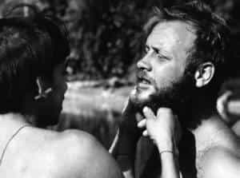

< < < Back
How Social Justice Warriors Have Been Infecting Science For Half A Century – Return Of Kings
This week marks the release of Roosh’s new book Free Speech Isn’t Free, a chronicle of his World Speaking Tour last year. It includes conclusions he made from discussions with his audience and—most importantly—the rhetorically and occasionally physically violent clashes with those who would attempt to censor his speech: the SJWs, the feminists, and certain members of the governments of the nations in question.
You know this already. And you’re also wondering what, if anything, does this have to do with science, specifically anthropology? A bit of background: I studied anthropology in college—more specifically biological anthropology, and there is a very specific reason that I mention this caveat: for, much like the Catholic and Orthodox Churches, the field of anthropology has had a schism: in this case, between biological and cultural factions.
To put it very simply, anthropology studies what you probably know as “human biodiversity” (this term is not regularly used. Perhaps it should be “hominid biodiversity” instead), and cultural, naturally, studies culture—without any input from biology.
It seems relatively sedate, but I don’t think it is much of an exaggeration to say that at least half of what we hate about modern society comes from cultural anthropology. Starting in the 20th century with Franz Boas and his fraudulent measures of human skulls to “debunk” HBD, to Margaret Mead’s staggeringly inaccurate depiction of a gender-neutral Samoa, the field has only gotten worse since then, essentially becoming a left-wing pseudo-religion that cites “proof” to justify any degree of social engineering.
As I wrote in an article on the subject of the schism for my site, I didn’t know why exactly this has occurred, but after reading Noble Savages, I have come closer to the truth. More to the point of this article specifically, the reaction to Doctor Chagnon’s findings in the 1970s is almost identical to the reaction that writers in our sphere receive today. The seeds of social justice warriors were born decades ago, and just as he was censored for years, so too could we be censored should we not fight back. His memoir also reveals ways of fighting back that are similar to Roosh’s.
30 Years In The Amazon
The story of his travails in the Amazonas province of Brazil are fascinating, and deserve the 200+ pages they receive in the book, but for purposes of readability I will be concise.
As a young PHD student in anthropology (the schism had not yet occurred), Napoleon Chagnon went to Amazonas to live amongst the Yanomamo tribe. Expecting to find Rousseauian “noble savages”, what he found was a strikingly brutal and violent “honor culture” of primeval masculinity that, overall, would completely terrify and disgust your average SJW (“Tribesmen are paranoid and hateful of cuckoldry? How dare they!”). On and off over the next 30 years, he lived amongst them, learning their language and culture and gaining a great deal of respect for them. Nonetheless, he realizes that the “noble savage” ideal is, and always will be, false.

His book presents four main theses, all of which we have seen are massively triggering to the progressive mind-
- Violence is ubiquitous in primitive society
- The desire to maximize security (ie: form large, effective fighting forces) is the biggest driving force behind increasing socialization
- Kinship selection is the predominant factor for increased socialization: in times of danger, you look to your family, your tribe, your culture—no atomized “blank slate” individuals in the jungle.
- As population increases, so too does the power of leaders: despotism is the natural state of man, with only a few legitimate democracies.
While these theories are interesting enough, they are not what we have truly come here to discuss.
The Reaction
When Napoleon Chagnon first attempted to present his findings to academia, the world of scientists reacted in a way more befitting the neon-haired Tumblrite than a rational, objective intellectual. Chagnon makes it explicit that their hatred of him is far beyond that of allegedly falsified data:
For many anthropologists who cling to Rousseau’s view of mankind rather than Hobbes’, I am a heretic, a misanthrope, and the object of condemnation by politically correct colleagues, especially those who identify themselves as ‘activists’ for native peoples, because I described the Yanomamo as I found them. (page 9)
The tactics of these opponents were also identical to their modern descendants:
1. Ignorance Of Science, While Claiming To Represent Science
At the 1976 Anthropology Association of America Consortium, Edward O. Wilson was scheduled to give a lecture—Wilson being the author of Sociobiology, a book whose central thesis was that evolution, particularly social and cultural behavior, could be applied to humans. Naturally, cultural anthropologists—referred to as being openly Marxist by the author—protested and demanded that he be banned.
The entire doctrine of “safe spaces” is almost identical, but here’s just one example of them demanding that something that makes them feel bad be banned, and here’s another example of progressives using bad science as a political bludgeon. Asks Chagnon “How can a group of scientists in 1976 be vehemently protesting the theory of evolution?”
2. Cherry Picking Data
In addition to having missionaries and other researchers go amongst the tribe and tell them “This guy thinks you evolved from monkeys!” specifically in hopes it would offend them, they would also seek out the most extreme proponents of biological anthro to use as a strawman argument: “Predictably, cultural anthropologists resisted these trends [studies of primates revealing possibly the evolution of social behavior], often by denigrating the academics or by criticizing the most sensational and amateurish work”, (P. 208).
This can be seen by media focus on our efforts being placed entire on the most extreme and odious neo-Nazis, “he man woman haters”, etc.
3. Outright Lying
Beginning at the first consortium, Chagnon is called out—in the most prissy way imaginable—by rival anthropologist Marvin Harris: “Did you know that there is a certain anthropologist who believes that this tribe has genes for warfare and infanticide?” (p. 390)
This marks the beginning of more than two decades of slander and abuse, in which Chagnon is accused of deliberately spreading measles, distributing machetes and shotguns amongst the tribe to increase violence, and somehow “causing” the high rate of observed domestic abuse in the tribe, making him a pariah in the anthropology community until the 21st century. Sound familiar?
4. Violence And Intimidation
Of course, this violence and intimidation is done in the most cowardly way possible: At the aforementioned 1976 consortium, E.O. Wilson was scheduled to speak, despite the fact that he had recently broken his leg. As he hobbles up to the podium, the stage was rushed by guests representing the “International Committee Against Racism”, who proceeded to dump multiple pitchers of ice water over the handicapped presenter while screaming that he is an evil-Nazi-racist-eugenicist.

These four tactics are what we can observe in the reaction to our meet-ups, or whenever “our side” tries to speak in public.
How To Fight It
Eventually, Napoleon Chagnon was vindicated, and he was tepidly welcomed back into the fold. How did things change?
Simply put, he stuck to his guns. He knew that his data was right, and he refused to submit to the left, knowing that even if he did his career would still be ruined. He continued to publish books and articles, and sought people who would give him a fair shake and corroborate his findings.
It wasn’t easy: Bitter fighting took place from 1976 until the late 2000s, leading Chagnon to retire from fieldwork in 1999 after a massive, stress-induced cardiac episode. And the slander essentially continued until 2010, when his findings were finally redeemed by both peer-reviewed surveys and testimony from the tribe itself:
Mr. Tierney’s book [Darkness in El Dorado, an anti-Chagnon book] has been translated…and we are annoyed with all his lies. When he was in the Orinoco [River Delta] he promised medical aid, and hospitals, we have none of these. They accuse Neel, Brewer, Roche, and Chagnon of manipulating us, when they were THE ONLY ONES that helped us (page 410).
And now that he has been vindicated, he can easily find a mainstream publisher to sell his book, which was released to rave reviews—even Huffington Post gave it a good review, in a remarkable display of tone-deafness.

This was a small but significant personal victory—he notes that nobody who attacked him in the four decades has been fired or stripped of their status. In making their wrongdoing visible, that might be a bigger victory. Our eventually victory will likely be a long and arduous one as well.
Read More: How Social Justice Warriors Miss The Mark